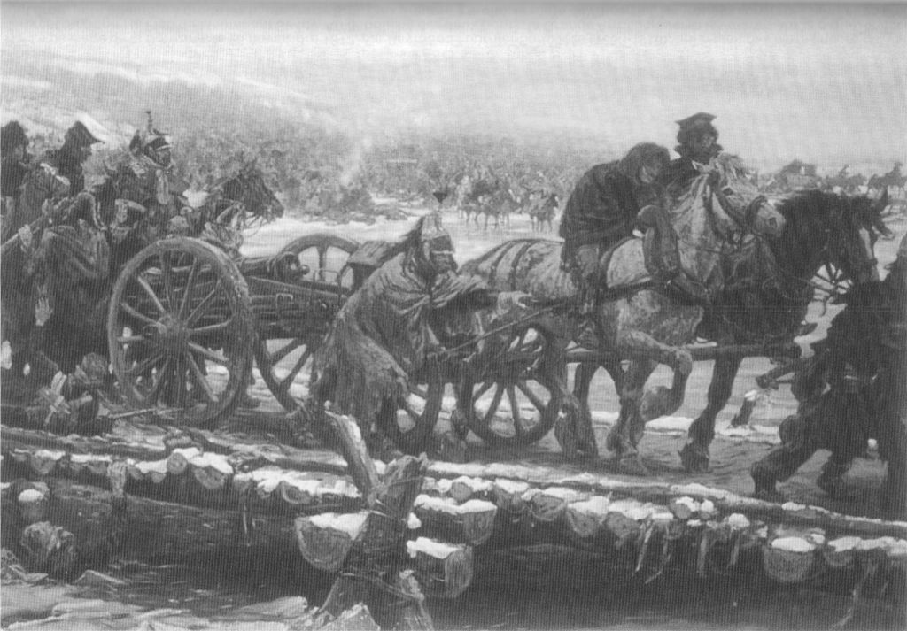
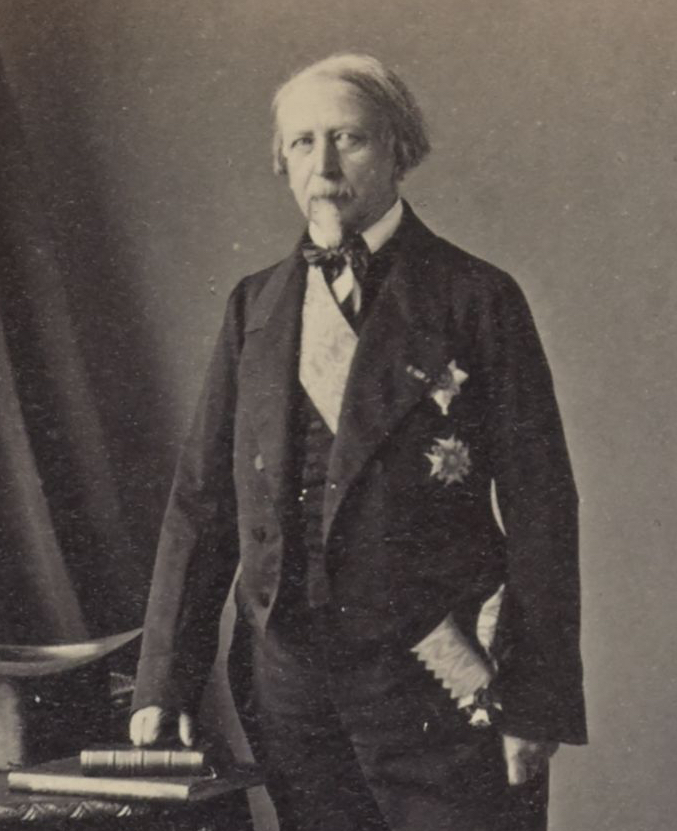
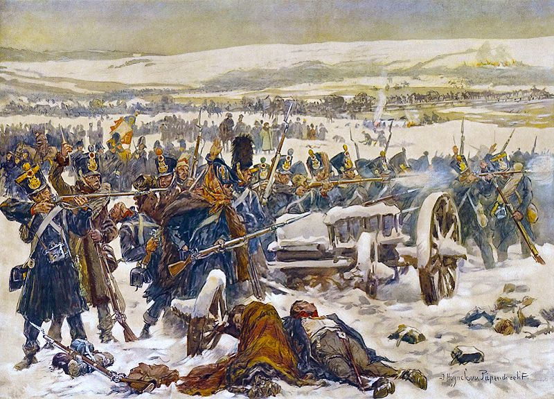

빌나를 향하여 - 나폴레옹의 잔머리
게시: 2021-10-25T06:30:03+09:00
베레지나를 빠져나온 나폴레옹은 이제 어디로 향했을까요? 애초에 보리소프의 불타버린 다리 앞에 갈 때까지도 나폴레옹의 다음 행선지는 민스크였습니다. 여기는 좀더 많은 보급품이 쌓여 있었고 폴란드보다는 러시아에 좀더 가까운 곳이었으므로 정치적으로 더 유리했기 때문이었습니다. 비록 민스크가 이미 치차고프의 손아귀에 있다고 하더라도, 싸워서 빼앗으면 되니까요. 이 행선지는 대부분의 정규군이 베레지나의 다리를 건넌 뒤인 11월 28일 밤까지도 변하지 않았습니다. 그러나 11월 28일 베레지나 서쪽 강변에서 치차고프의 선봉과 전투를 치루어본 결과, 나폴레옹은 이제 그랑다르메가 도저히 치차고프의 본대를 꺾을 힘을 갖추고 있지 않다는 것을 인정해야 했습니다. 우디노와 네가 비록 치차고프에게 패배하지는 않았다고 하더라도, 간신히 막아내는 것이 전부였습니다. 게다가 별로 쓸모도 없는 대포는 많이들 무사히 다리를 건넜으나, 상당수의 부대가 짐마차를 버리고 다리를 건너야 했습니다. 뜻하는 바는 이제 정말 먹을 것이 없다는 것이었습니다. 물론 여태까지도 없었지만 이제부터는 정말 굶주림이 시작될 판국이었습니다. 나폴레옹은 어쩔 수 없이 민스크를 포기하고 빌나로 향했습니다.

(대포 뿐만이 아니라 상당수의 마차가 포병대용 임시교량을 통해 무사히 베레지나를 건넜습니다. 그러나 많은 경우 수레바퀴가 부러졌다든지 말이 죽었다든지 하는 이유 등으로 강을 건너지 못했고, 나폴레옹의 참모였던 샤펠(Antoine Chapelle)에 따르면 그랑다르메는 여기서 약 4천 마리의 말과 6~7백 대의 짐마차를 잃었습니다.)
병사들도 그랬겠지만 특히 나폴레옹은 식량 말고도 다른 것 때문에 심각한 결핍을 느끼고 있었습니다. 바로 편지였습니다. 특히 이건 나폴레옹에게는 심각한 문제였습니다. 나폴레옹은 황제로서 파리의 정세가 어떻게 돌아가는지, 유력 인사들의 살롱에서 어떤 소문이 퍼지고 있는지 반드시 알아야 했습니다. 그래도 스몰렌스크까지는 꾸준히 파발마가 오가며 파리와 나폴레옹을 연결해주었습니다. 그러나 그 이후로 거의 3주간 나폴레옹은 파리의 소식을 전혀 받아보지 못하고 있었습니다. 물론 이는 그 일대를 장악하고 있는 코삭 기병들 때문이었습니다. 그렇다고 나폴레옹이 완전히 후방과 단절된 것은 아니었습니다. 적어도 빌나와는 소식을 주고 받고 있었는데, 이는 몇몇 폴란드 귀족들이 농부로 변장하고 코삭들의 눈을 피해 빌나와 나폴레옹의 사령부 사이를 부지런히 오간 덕분이었습니다. 그는 이런 인편을 통해 11월 29일 빌나의 마레에게 '곧 그리고 갈텐데 거기서 방어선을 꾸릴 수 있을지 확신이 가지 않는다, 식량이 없다는 것이 가장 큰 문제다, 딱 2주만 주어진다면 낙오병들을 주워모아 군을 재편성할 수 있을텐데 그럴 시간이 주어질 것 같지가 않다'라고 하소연하며, 프랑스와 제국, 그리고 그랑다르메 전체를 위해 자기가 파리로 먼저 돌아가야 할 것 같다는 뜻을 전했습니다. 그러면서 나폴레옹이 마레에게 요구한 것은 3가지였습니다. 첫째, 파리의 소식, 둘째, 10만명 분의 빵, 셋째, 모든 동맹국 외교사절들을 뭐든 적당한 핑계를 대고 돌려보내라는 것이었습니다. 첫째와 둘째 요구는 쉽게 이해가 갑니다만, 셋째는 무엇을 위한 것이었을까요? 나폴레옹은 바보가 아니었으므로, 이미 유럽 각지에서는 그랑다르메의 처참한 패배에 대한 소문이 횡행할 거라는 것을 잘 알고 있었습니다. 하지만 당시는 TV도 SNS도 없는 시절이었으므로 유럽 각국 정부는 프랑스와 러시아 양측 모두가 일방적으로 주장하는 각자의 승리 소식을 반신반의할 수 밖에 없다는 것도 알고 있었습니다. 그런데 나폴레옹이 완전히 찌그러들고 거지꼴이 된 패잔병들을 데리고 빌나로 들어오는 것을 각국에서 온 외교관들이 직접 본다면 나폴레옹의 대패를 확인시켜주는 꼴이 되는 셈이었습니다. 그래서 그런 '신뢰할 수 있는 목격자들'을 없애기 위해 외교사절들을 다 철수시키라는 것이었지요.

(몽테스키우 백작입니다. 1812년 당시 그는 24세의 젊은 자작이자 나폴레옹의 참모 장교였습니다. 원래 그는 18세의 나이로 자원하여 사병 생활부터 시작했는데, 그가 나폴레옹의 참모 장교로 뽑힌 것은 귀족의 자제라는 이유 외에도 그가 실제로 전투에서 용기를 입증해보였기 때문이었습니다. 그는 1809년 아스페른-에슬링 전투에서 공훈을 세웠고 덕분에 바그람 전투 때부터는 나폴레옹의 참모가 되었습니다. 그는 나중에 나폴레옹이 엘바 섬으로 귀양갈 때 스스로 자원하여 동행하기를 요청했으나 그럴 깜이 되지 못한다며 그 수행단에 끼지 못했고, 덕분에 괜히 부르봉 왕가의 블랙리스트에 이름이 올라 비엔나에서 망명생활을 해야 했습니다. 그는 나중에 복권이 되어 루이-필립 왕정 하에서 육군 원수까지 올랐고, 루이-필립이 망명할 때는 그와 함께 망명했습니다.) 승자에게는 거짓말과 포장이 별로 필요없었습니다만, 패자가 살아남아 재기를 도모하기 위해서는 그런 것들이 반드시 필요했습니다. 그래야 동맹국들이 일제히 자신에게서 등을 돌리는 것을 막을 수 있었으니까요. 그걸 잘 알고 있던 나폴레옹은 젊은 몽테스키우(Ambroise Anatole Augustin de Montesquiou-Fézensac) 자작에게 '베레지나 전투에서 6천명의 러시아 포로와 12문의 대포를 노획했다'는 휘황찬란한 전투 보고서와 거기서 빼앗은 러시아 군기 8자루를 들고 파리로 달려가되, 너무 급히 달려가지 말고 코브노(Kovno)와 쾨니히스베르크, 베를린 등 주요 도시마다 충분히 꾸물거리며 오래 머물러 현지 사람들에게 프랑스군이 대승을 거두었다는 소문을 내도록 했습니다.

(역사는 승자에 의해서 기록되는 법이고, 사실은 전달하는 자가 어떤 관점에서 전달하느냐에 따라 얼마든지 각색될 수 있는 법입니다. 베레지나에서 승리한 것이 과연 프랑스인지 러시아인지는 논쟁의 소지가 있습니다. 그림은 베레지나에서 러시아군과 싸우는 네덜란드군의 모습입니다.)
하지만 손바닥으로 해를 가릴 수는 없는 노릇이었습니다. 나폴레옹이 대패를 겪은 것이 아니라 그저 좀더 유리한 환경에서 겨울을 나기 위해 빌나로 돌아온 것 뿐이라는 변명이 통하려면 무엇보다 빌나를 러시아군으로부터 지켜내야 했습니다. 그리고 그러자면 적어도 둘 중 하나가 필요했습니다. 러시아군이 추격을 포기하고 돌아가거나, 그랑다르메의 잔존 병력과 낙오병들을 무사히 빌나까지 몰고와서 재편하고 재무장시켜야 했습니다. 대부분의 병력이 무사히 베레지나를 건넜던 11월 28일 낮까지만 해도 분위기는 그렇게 나쁘지 않았습니다. 강을 건넌 병사들과 장교들은 모두 이젠 살았다는 분위기가 역력했습니다. 콜랭쿠르의 기록에는 '베레지나를 건너자 모든 얼굴들이 환해졌다'라고 되어 있고, 부르고뉴 하사는 회고록에 '병사들이 마치 라인 강을 건너 프랑스로 넘어온 것처럼 기뻐했다'고 적었습니다. 모두들 이제 최악의 난관은 지났다고 생각했습니다. 그러나 최악은 이제부터 시작이었습니다. 지난 28일, 군중 틈에 끼어 다리가 아니라 강변으로 몰렸지만, 수영에 자신이 있었기 때문에 망설이지 않고 베레지나 강물 속에 뛰어들어 헤엄쳐서 강을 건넜던 게리네(de la Guerinais) 대위를 기억하시는지요? 게리네 대위는 강 서쪽에서 병사들이 피워놓은 모닥불 가에 자리잡고 옷을 말리며 병사들이 빌려준 담요를 덮고 편히 쉴 수 있었습니다. 그런데 바로 다음날 게리네 대위는 목숨을 잃었습니다. 이유는 무엇이었을까요? 일단 아침에 일어나보니 누군가 그의 옷을 다 훔쳐간 뒤였습니다. 완전 알몸이었던 그는 볼썽 사납게도 담요로 몸을 감싼 채 벌벌 떨며 군을 따라 빌나로 향했습니다. 그러나 바로 그날 밤 담요 한 장 외에는 몸을 가릴 것이 없었던 게리네 대위는 얼어죽고 말았습니다. 전설 속에 이야기되던 나폴레옹을 패배시킨 러시아의 동장군이 11월 29일 밤부터 본격적으로 시작되었던 것입니다. Source : 1812 Napoleon's Fatal March on Moscow by Adam Zamoyski
https://fr.wikipedia.org/wiki/Anatole_de_Montesquiou-Fezensac